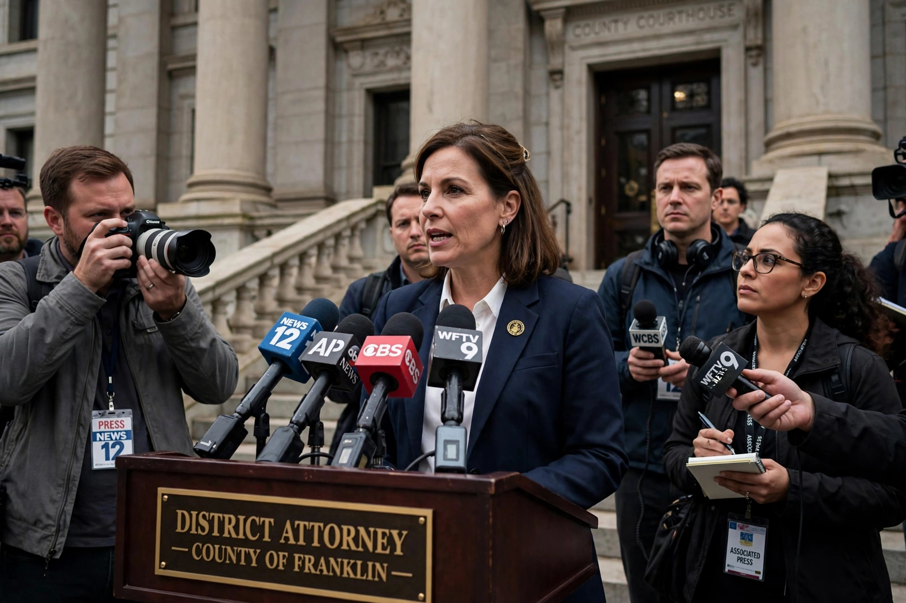

In the United States, a district attorney (DA) is the chief prosecutor representing the state in a local jurisdiction, typically a county or a judicial district composed of several counties. The district attorney leads a staff of prosecutors known variously as deputy district attorneys or assistant district attorneys, who prosecute criminal cases on behalf of the state.

A district attorney addressing reporters on courthouse steps.
The district attorney decides whether to bring criminal charges, and which charges to bring, based on evidence gathered by law enforcement — a wide discretion that makes the office one of the most powerful in the local criminal justice system. The DA's office presents cases to grand juries where required, negotiates plea bargains, tries cases before juries, and recommends sentences. In some jurisdictions the DA also handles certain civil matters, child support enforcement, or public corruption investigations.
In most states, district attorneys are elected by the voters of their district, usually for four-year terms; in a few states they are appointed. Equivalent offices carry different titles by jurisdiction: "state's attorney" (e.g. Illinois, Maryland, Florida), "county attorney", "prosecuting attorney", or "commonwealth's attorney" (Virginia, Kentucky). Federal prosecutors, by contrast, are United States Attorneys appointed by the President.
State statutes and criminal procedure texts on prosecution in the United States.